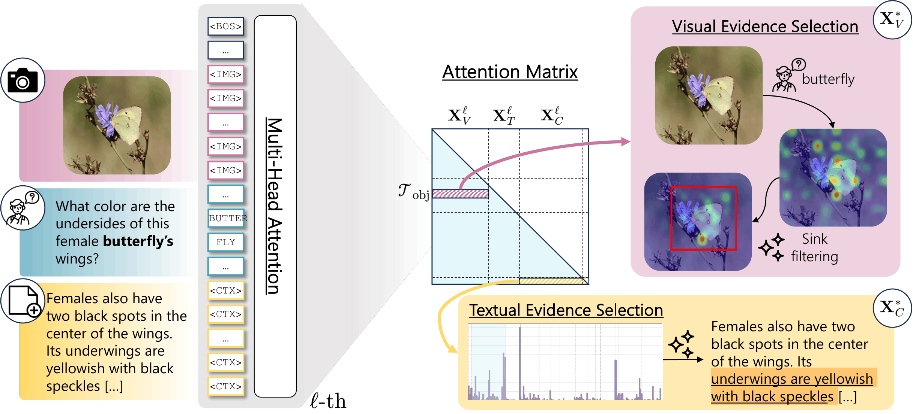
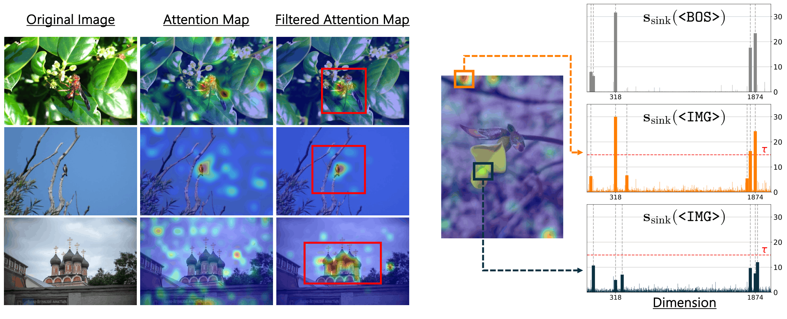
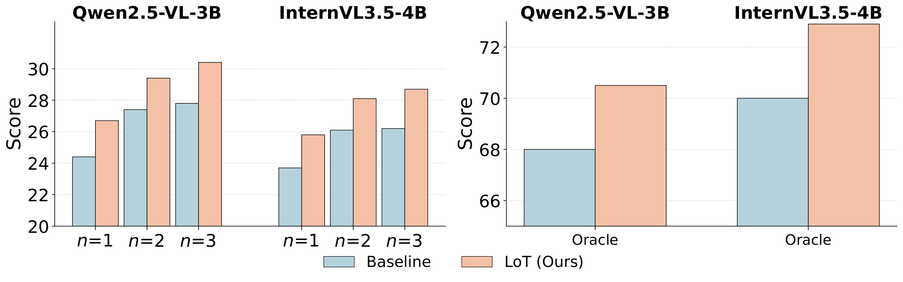

-1.png)
Figure 6. LoT on POPE and AMBER: visual grounding guides the model toward the correct yes/no answer about object presence.
A lightweight inference-time framework that improves how pretrained MLLMs utilize multimodal evidence — no fine-tuning, no architectural changes.
University of Modena and Reggio Emilia
Answering questions about images often requires combining visual understanding with external knowledge. Multimodal Large Language Models (MLLMs) provide a natural framework for this setting, but they often struggle to identify the most relevant visual and textual evidence when answering knowledge-intensive queries.
In such scenarios, models must integrate visual cues with retrieved textual evidence that is often noisy or only partially relevant, while also localizing fine-grained visual information in the image. We introduce Look Twice (LoT), a training-free inference-time framework that improves how pretrained MLLMs utilize multimodal evidence.
We exploit the model attention patterns to estimate which visual regions and retrieved textual elements are relevant to a query, then generate the answer conditioned on this highlighted evidence. The selected cues are highlighted through lightweight prompt-level markers that encourage the model to re-attend to the relevant evidence during generation — with negligible computational overhead.
Figure 1. Look Twice (LoT): a two-pass inference strategy that highlights query-relevant visual regions and textual evidence to improve multimodal reasoning.
LoT operates entirely at inference time. The model looks at the input twice: a first lightweight generation step produces a single token, used to inspect internal attention patterns. A second generation pass produces the final answer conditioned on highlighted evidence.
Generate a single token to read the model's internal attention patterns. Extract object-to-visual attention to locate relevant image regions, and last-to-context attention to score retrieved sentences.
Identify and suppress spurious visual tokens acting as attention sinks — tokens that attract disproportionate attention regardless of semantic relevance — using hidden-state activation statistics.
Aggregate filtered attention into a 2D map and extract a bounding box via weighted centroid and spread. The cropped region is inserted into the prompt with special markers.
The final answer is generated with the original image replaced by the cropped evidence and the most relevant retrieved sentence wrapped in importance markers, guiding the model's attention.

Figure 2. Overview of the LoT pipeline, showing textual evidence selection (attention matrix → sentence highlighting) and visual evidence selection (sink filtering → bounding box extraction).
Object-conditioned attention between question tokens and visual tokens produces a query-specific relevance map, explicitly capturing how the queried object interacts with the visual input.
Tokens with disproportionately high hidden-state activations in sink dimensions (identified from the base LLM) are suppressed, yielding cleaner grounding maps without modifying the model.
The attention map is converted into a precise spatial region by computing the attention-weighted centroid and standard deviation, outperforming min-max and morphological alternatives.
Last-token-to-context attention aggregated across deep decoder layers identifies the single most relevant retrieved sentence, which is wrapped with importance markers during generation.

Figure 3. Qualitative examples of attention sink filtering. Raw maps (center) contain scattered activations; filtered maps (right) are tightly concentrated around the target object.
LoT is evaluated on four KB-VQA benchmarks (E-VQA, InfoSeek, OVEN, ViQuAE) across ten off-the-shelf MLLMs in a zero-shot setting. Gains range from +1.1 to +5.3 average accuracy depending on the backbone, with no additional training.
| Model | E-VQA All | InfoSeek All | OVEN All | ViQuAE | Avg |
|---|---|---|---|---|---|
| Small Models | |||||
| Qwen2.5-VL-3B | 27.8 | 22.4 | 11.5 | 22.9 | 21.2 |
| + LoT (Ours) | 30.4 | 25.2 | 18.3 | 27.8 | 25.5 +4.3 |
| InternVL3.5-4B | 26.2 | 28.9 | 10.8 | 36.4 | 25.6 |
| + LoT (Ours) | 28.7 | 33.2 | 11.5 | 45.6 | 29.8 +4.2 |
| Medium Models | |||||
| Qwen2-VL-7B | 22.9 | 24.4 | 11.1 | 33.0 | 22.9 |
| + LoT (Ours) | 25.6 | 29.9 | 16.6 | 40.8 | 28.2 +5.3 |
| Qwen3-VL-8B | 35.0 | 29.7 | 17.7 | 43.7 | 31.5 |
| + LoT (Ours) | 36.4 | 32.8 | 19.6 | 51.0 | 35.0 +3.5 |
| Large Models | |||||
| InternVL3.5-38B | 31.6 | 33.1 | 20.2 | 51.5 | 34.1 |
| + LoT (Ours) | 33.5 | 36.8 | 18.5 | 61.0 | 37.5 +3.1 |
Table 1. Performance on KB-VQA benchmarks. LoT consistently improves all backbones without any training.

Figure 4. Performance on E-VQA as the number of retrieved passages varies (left) and with oracle evidence (right). LoT consistently outperforms zero-shot baselines in all settings.
When applied with only visual cues (no retrieved text), LoT still improves performance on vision-centric (RealWorldQA, V-Star), OCR (TextVQA, OCRBench, ChartQA), and hallucination benchmarks (POPE, AMBER-D), demonstrating that improved visual grounding benefits multimodal reasoning broadly.
Figure 6. LoT on POPE and AMBER: visual grounding guides the model toward the correct yes/no answer about object presence.
@article{morini2026looktwice,
title = {{Look Twice: Training-Free Evidence Highlighting in Multimodal Large Language Models}},
author = {Morini, Marco and Sarto, Sara and Cornia, Marcella and Baraldi, Lorenzo},
journal = {arXiv preprint arXiv:XXXX.XXXXX},
year = {2026}
}